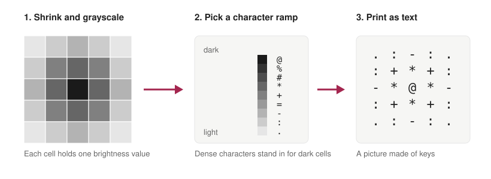

Can a picture be drawn using only the keys on a keyboard?
Yes, and the idea is older than the web. ASCII art builds an image out of text characters. It works because a monospaced font gives every character the same width, which turns a page of text into a grid, and a grid can hold a picture. This post goes from the history of the idea to a working converter, including a few measurements I made along the way, and ends with why I think it is a good way to understand representation in machine learning.
_____ | | | o o | | - | |_____| /| |\ / |_____| \ |_| |_|
1. The medium: a grid of 95 symbols
ASCII, the American Standard Code for Information Interchange, was first published as a standard in 1963. It defines 128 codes, of which 95 are printable: the letters, digits, punctuation and the space. Those 95 symbols are the entire palette of ASCII art. Nothing has a colour and nothing is round, so every picture is built from the way the shapes of characters happen to look at a distance: a full stop is almost empty, a capital M is almost solid, a slash leans one way and a backslash leans the other.
The grid matters as much as the symbols. In a proportional font the letters differ in width and lines would not line up. In a monospaced font every cell is the same size, so position in the text is position in the picture.
2. A short history
People drew with typewriters long before computers could, repeating characters and shifting the paper to build tones and outlines. In 1966, at Bell Labs, Kenneth Knowlton and Leon Harmon produced “Studies in Perception I”, an image of a reclining figure assembled from tiny symbols chosen by how dark each one looked. It is an early and well-known example of the brightness-to-symbol idea that this post is about.
In the 1980s and 1990s, on bulletin boards and Usenet, text was the only graphics that fit through a modem. People drew logos, signatures and whole scenes, and ANSI art added colour with escape codes. In 1982, Scott Fahlman proposed the smiley :-) on a Carnegie Mellon message board, which is ASCII art at its smallest: three characters standing in for a face. Today it survives in README banners, command-line tools, code comments that sketch a data structure, and the diagrams in this post.
3. From pixels to characters
The method is a short pipeline. Shrink the image to a small grid, convert it to grayscale, and replace each cell with the character whose look best matches that brightness.

A concrete example. A grayscale pixel runs from 0 (black) to 255 (white), which is 256 levels. A ten-character ramp has nine steps between its ends, so each character covers about 28 levels. The converter picks the index by rounding 100 / 255 × 9 ≈ 3.5, which gives index 4 and the character + for a mid-dark pixel, while a pixel of value 240 rounds to index 8 and becomes a full stop. This step, replacing 256 levels with 10, is quantisation, and it is where all the detail is lost.
To show it working, I made a synthetic image of a sphere lit from the upper left, so there is no copyright question, and ran the converter below on it. This is the actual output, 60 characters wide:
.....::::::::::::..
.............:::::--------:.
...... ..........:::::----=====-.
... .........:::::----===+++=:
... ........:::::-----===++**+-
.. ........:::::-----====+++*#*:
... ........::::::-----====+++**##=
... .........::::::-----====+++***#%*.
.... ..........::::::-----====++++***##%#.
..... ..........:::::::-----=====+++****##%%*
.:....... .............:::::::-----=====++++***###%%%=
::.......................:::::::------=====++++****###%%%%.
.::....................::::::::-------=====++++****###%%%%%=
:::::...............:::::::::-------======++++****###%%%%%%#
--:::::::.....:::::::::::::-------======+++++****###%%%%%%%#
---:::::::::::::::::::::--------======+++++*****###%%%%%%%%#
-----:::::::::::::::----------=======+++++****####%%%%%%%%%#
:=-------------------------=======++++++*****####%%%%%%%%%%=
.===-------------------=========++++++*****####%%%%%%%%%%%%.
-+====-----------===========++++++******#####%%%%%%%%%%%%=
=+=====================++++++++******#####%%%%%%%%%%%%%*
.+++++===========++++++++++*******#####%%%%%%%%%%%%%%%#.
.+*+++++++++++++++++++********######%%%%%%%%%%%%%%%%*.
=******+++++************#######%%%%%%%%%%%%%%%%%%+
:*##**************########%%%%%%%%%%%%%%%%%%%%*:
-*%#################%%%%%%%%%%%%%%%%%%%%%%#-
-*%%%%%%%%%%%%%%%%%%%%%%%%%%%%%%%%%%%%*-
.=*%%%%%%%%%%%%%%%%%%%%%%%%%%%%%%*=.
.-+*#%%%%%%%%%%%%%%%%%%%%#*+-.
.:-=+*##%%%%%%##*+=-:.
The shaded side is dense because the ramp maps dark pixels to dense characters. On a dark terminal you would reverse the ramp, so that bright pixels get the dense characters.
4. Four details that decide whether it looks good
Cells are not square. A character cell is usually about twice as tall as it is wide. If you map one pixel to one character, everything comes out stretched vertically. The fix is to squash the image to about half its height before converting. Here is the same circle both ways, from the same image:
####
##########
############
################
################
##################
####################
####################
####################
######################
######################
######################
######################
####################
####################
####################
##################
################
################
############
##########
####
############
################
##################
####################
######################
######################
####################
##################
################
############
Brightness is not linear. Screens encode brightness with a gamma curve, and people judge brightness by contrast, not by raw value. A simple grayscale conversion also weights the colour channels, commonly about 0.299 for red, 0.587 for green and 0.114 for blue, because the eye is most sensitive to green. Raising the brightness to a power (the gamma argument in the code below) lets you lift dark regions or deepen light ones.
The ramp is a design choice. The ramp @%#*+=-:. is traditional, but it is a convention and not a measurement. I rendered each printable character in DejaVu Sans Mono, a free monospaced font, and measured how much of its cell is inked. The darkest were @ (about 14% of the cell), M, N, W and B. The lightest visible ones were the backtick (about 1%), full stop, hyphen and apostrophe, with the space at exactly zero. The traditional ramp turned out not to be perfectly ordered in this font: # (12%) is darker than % (10%), and + and = (both about 5.5%) are inked more than * (5%). Ordering a ramp by measured ink gives smoother shading for a particular font, and a different font would give a different ramp.
Length is a trade-off. More characters allow smoother gradients. Fewer characters give a bolder, more graphic look and survive being copied into a place with a different font.
5. Going beyond brightness
There are three common refinements. The first is dithering. When there are few levels, error diffusion hides banding. The Floyd–Steinberg algorithm (1976) pushes each cell’s rounding error onto its neighbours, in fixed shares of 7/16, 3/16, 5/16 and 1/16, and the same trick works on character grids.
The second concerns edges. Brightness alone blurs outlines, but an edge detector such as the Sobel operator gives the direction of an edge at each cell, and the converter can place /, \, | or - where lines run. The third is structure. Xuemiao Xu, Linling Zhang and Tien-Tsin Wong’s “Structure-based ASCII art” (SIGGRAPH 2010) matches the actual shape of each glyph against the local structure of the image, rather than only its average brightness, which keeps outlines sharp.
6. The full converter
This is the whole program, about a dozen lines. It needs the Pillow and NumPy libraries.
from PIL import Image
import numpy as np
RAMP = "@%#*+=-:. " # dense to sparse: dark pixels get dense characters
def to_ascii(path, width=80, ramp=RAMP, cell_aspect=0.5, gamma=1.0):
img = Image.open(path).convert("L") # 1. grayscale
w, h = img.size
height = max(1, int(width * h / w * cell_aspect)) # 2. squash: cells are taller than wide
img = img.resize((width, height))
px = (np.asarray(img, dtype=float) / 255.0) ** gamma # 3. brightness in [0, 1]
idx = (px * (len(ramp) - 1)).round().astype(int) # 4. quantise to a ramp index
return "\n".join("".join(ramp[i] for i in row) for row in idx)
print(to_ascii("photo.png", width=80))
Things to try: reverse the ramp for a dark terminal, build a ramp from your own font using the ink measurement above, set gamma below 1 for a faded photo, and add Floyd–Steinberg error diffusion before the quantisation step.
7. What ASCII art teaches about representation
Turning 256 brightness levels into ten characters is the same operation as quantisation in machine learning. The ramp is a codebook of ten symbols, and each cell is assigned its nearest entry. Vector-quantised models take this much further: Aäron van den Oord and colleagues’ VQ-VAE (2017) learns a discrete codebook so that an image can be described as a grid of code indices, which is a learned, far richer version of what a ramp does by hand.
It also shows how much survives a harsh choice of representation. A face made of a dozen characters is still a face. That is useful to remember when comparing models and datasets: the question is rarely how much information a representation holds, but whether it keeps the information the task needs.
Finally, text pictures raise a question for language models, which receive images of this kind as tokens in a row. A 2024 ACL paper on ASCII-art attacks (ArtPrompt, by Fengqing Jiang and colleagues) showed that models trained to refuse certain words could misread those words when they were drawn as ASCII art. It is a reminder that a shape spread over many lines is not the same thing, for a model, as a word on one line.
Further reading
American Standards Association (1963). American Standard Code for Information Interchange (ASA X3.4-1963).
Knowlton, K. and Harmon, L. (1966). Studies in Perception I. Bell Telephone Laboratories.
Floyd, R. W. and Steinberg, L. (1976). An adaptive algorithm for spatial grey scale. Proceedings of the Society for Information Display.
Xu, X., Zhang, L. and Wong, T.-T. (2010). Structure-based ASCII art. ACM Transactions on Graphics (SIGGRAPH).
van den Oord, A., Vinyals, O. and Kavukcuoglu, K. (2017). Neural discrete representation learning. NeurIPS.
Jiang, F. et al. (2024). ArtPrompt: ASCII art-based jailbreak attacks against aligned LLMs. ACL.
Appendix: credits
Figure 1 is my own schematic diagram. The sphere and circle pictures were generated by code for this post, so no outside images are used. The ink measurements were made with DejaVu Sans Mono at one size, and other fonts will differ.